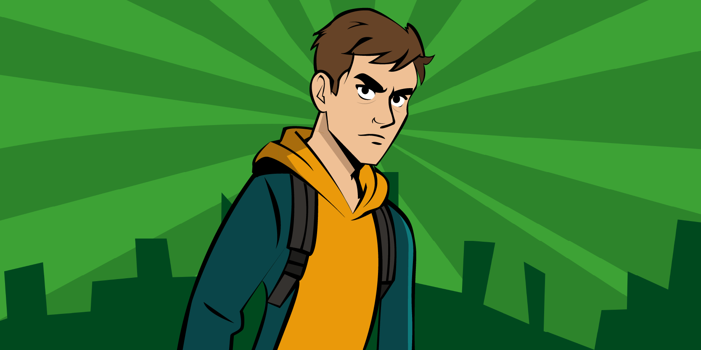
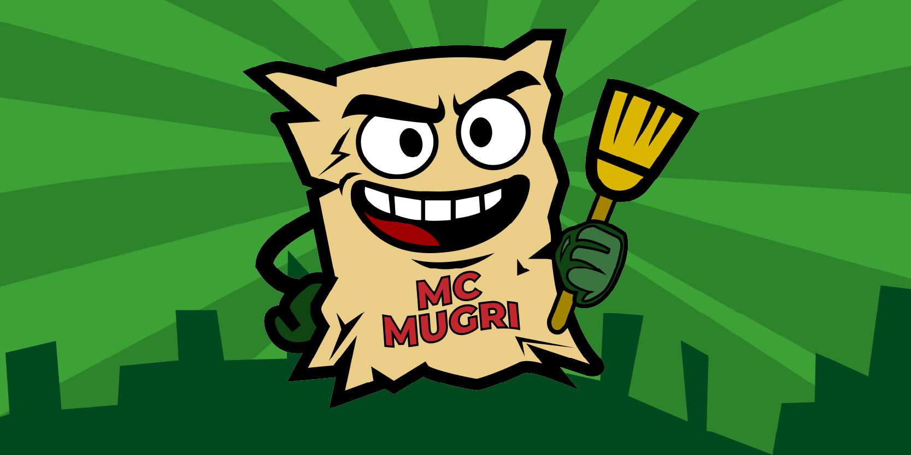
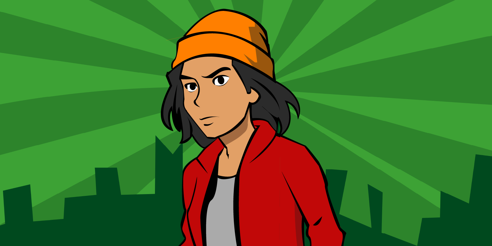

PERSONAJES

TOMÁS
Estudiante universitario de clase media, que vive con cansancio constante por la cantidad de estímulos visuales en su vida.

MR MUGRI
Un panfleto ambulante de una publicidad fallida, que una noche cobra vida propia. Ahora, busca ayudar a los protagonistas en su camino.

LUISA
Joven trabajadora de escasos recursos, que vela por si misma y por la gente que la rodea; a pesar de sus dificultades, busca limpiar su barrio.
FUNCIONALIDADES
-

Mecánica principal:
Combina elementos similares para eliminarlos y restaurar áreas de la ciudad.
-
Progresión:
Cada nivel representa un sector de Bogotá, avanzando desde zonas muy contaminadas hasta espacios más limpios y ordenados.
-
Objetivo:
Recuperar el equilibrio visual de la ciudad, un bloque a la vez.